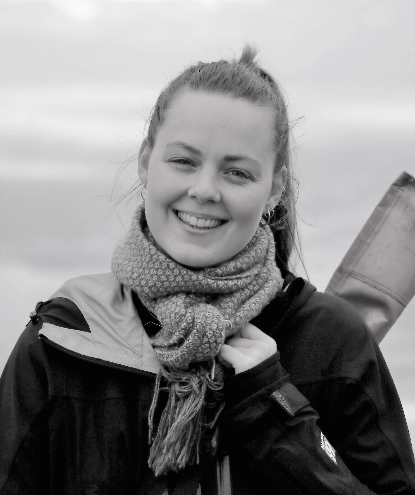

Katrín Björnsdóttir
Plant ecologist working in the EDGE lab in Gothenburg, where I focus on how tundra plant communities respond to climate change and what that means for ecosystem function.

Plant ecologist working in the EDGE lab in Gothenburg, where I focus on how tundra plant communities respond to climate change and what that means for ecosystem function.
